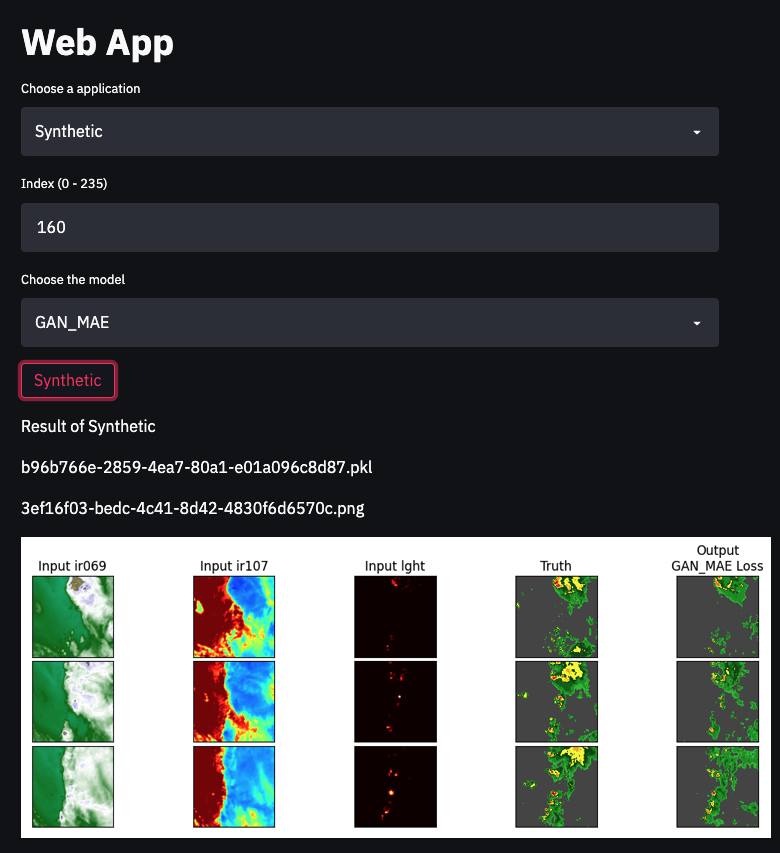
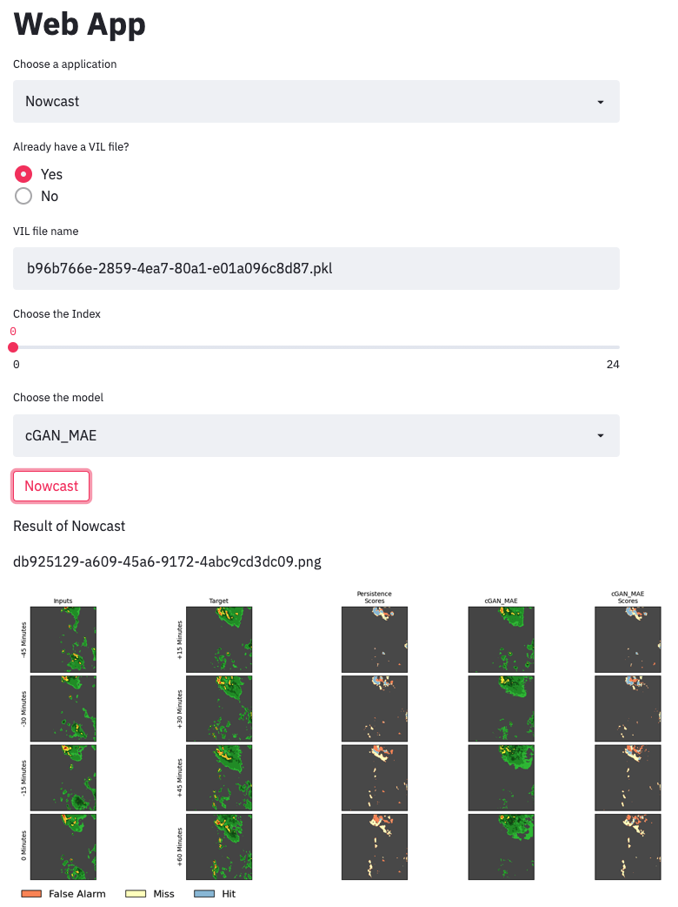
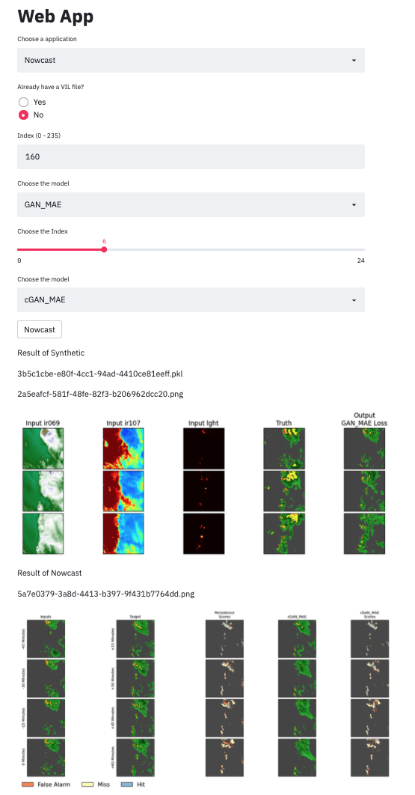
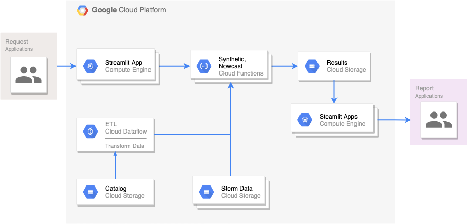
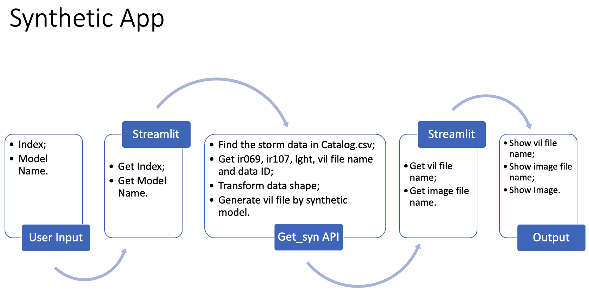
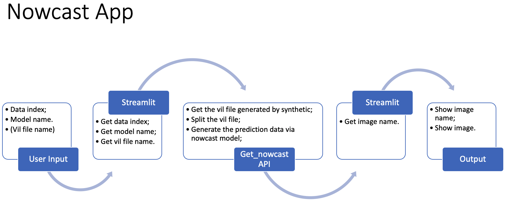

The source code of Google Cloud APIs is in backend folder, and the source code of streamlit is in streamlit folder. The streamlit app is also deployed on Google Cloud Platform.
If you want to get a FastAPI + Streamlit version, you can see this GitHub. But it is a old version, I have updated several versions only on Google Cloud Platform, because of the time limitation. So FastAPI + Streamlit version is different from GCP version. And FastAPI + Streamlit version and GCP version are unrunnable, because I didn't upload the GCP credential json file. You can try to use your own GCP credential json file to run this code. And you can get your GCP keys according to Creating and managing service account keys.
You can visit the website by https://hardy-portal-318606.de.r.appspot.com/.
In Choose an appliocation, if you choose the Synthetic, the website will look like below without result part. Then you can input the index which you want to generate a VIL file, and choose a synthetic model. After that, you can click the Synthetic button.

Finally, you can get your result. The b96b766e-2859-4ea7-80a1-e01a096c8d87.pkl is the VIL file generated by synthetic model. And the 3ef16f03-bedc-4c41-8d42-4830f6d6570c.png is the result figure.
In Choose an appliocation, if you choose the Nowcast, and if you already have a VIL file, you can click the Yes button in Already have a VIL file part. Then you can input your VIL file name, for example, you generated a VIL file in Synthetic step just now, the file name is b96b766e-2859-4ea7-80a1-e01a096c8d87.pkl. You can input that and choose the index and nowcast model. You can see the picture below.

Finally, you can get the db925129-a609-45a6-9172-4abc9cd3dc09.png as your result.
If you don't have a VIL file, you can click the No button in Already have a VIL file part. Then you can follow the steps above to do synthetic and nowcast together. You can see the example in figure below.

Note: If you see the picture in the website is broken, you can copy the image file name, and in Choose an appliocation, choose View Image, then paste the image name into the input box and press Enter.

I pushed get_syn function by gcloud functions deploy get_syn --runtime python37 --memory 4096MB --timeout 500s --trigger-http --allow-unauthenticated as a Google Cloud Function. And the source code of the get_syn is following:
def get_syn(request):
request_json = request.get_json(silent=True)
request_args = request.args
if request_json and 'modelName' in request_json and 'idx' in request_json:
modelName = request_json['modelName']
idx = int(request_json['idx'])
elif request_args and 'modelName' in request_args and 'idx' in request_args:
modelName = request_args['modelName']
idx = int(request_args['idx'])
FS = gcsfs.GCSFileSystem(project="Assignment1",
token="hardy-portal-318606-3c8e02bd3a5d.json")
model = config.synthetics[modelName]
with FS.open(f'gs://assignment1-data/models/synrad/{model}.h5', 'rb') as model_file:
model_gcs = h5py.File(model_file, 'r')
model = tf.keras.models.load_model(model_gcs, compile=False, custom_objects={"tf": tf})
x_test, y_test = syntheticData.get_data(idx)
y_pred = synthetic.run_synrad(model, x_test)
imgname, pklname = synthetic.main(modelName, x_test, y_test, y_pred)
return {"imgname": imgname, "pklname": pklname}
And then I also pushed get_nowcast function by gcloud functions deploy get_nowcast --runtime python37 --memory 4096MB --timeout 500s --trigger-http --allow-unauthenticated as a Google Cloud Function. The source code is following:
def get_nowcast(request):
request_json = request.get_json(silent=True)
request_args = request.args
if request_json and 'modelName' in request_json and 'pklname' in request_json and 'idx' in request_json:
modelName = request_json['modelName']
pklname = request_json['pklname']
idx = int(request_json['idx'])
elif request_args and 'modelName' in request_args and 'pklname' in request_args and 'idx' in request_args:
modelName = request_args['modelName']
pklname = request_args['pklname']
idx = int(request_args['idx'])
FS = gcsfs.GCSFileSystem(project="Assignment1",
token="hardy-portal-318606-3c8e02bd3a5d.json")
model = config.models[modelName]
with FS.open(f'gs://assignment1-data/models/nowcast/{model}.h5', 'rb') as model_file:
model_gcs = h5py.File(model_file, 'r')
model = tf.keras.models.load_model(model_gcs, compile=False, custom_objects={"tf": tf})
x_test, y_test = dataPipeline.run(pklname)
name = nowcast.visualize_result(model, x_test, y_test, idx, modelName)
return {"name": name}
Finally, I deployed my steamlit app on Google Cloud by gcloud app deploy app.yaml. You can visit the website by https://hardy-portal-318606.de.r.appspot.com/.
I didn't upload all of the sevir data to Google Cloud Platform, because of the extremely large data size. So I have cleaned the Catalog.csv file, retaining only the data which have ir069, ir107, lght, vil and vis files. After that, there are only 236 storm events remained in Catalog.csv. That's why, the input index of synthetic part should be from 0 to 235.

get_syn API called by streamlit app: get_syn function will find the storm data in Catalog.csv according to the data index passed by streamlit app;
get_nowcast API called by streamlit app: get_nowcast function will load the vil data passed by streamlit app;Event Frames: [-----------------------------------------------]
[----13-----][---12----]
[----13----][----12----]
[-----13----][----12----]
... in total 25 (x, y)s
[-----13----][----12----]
[-----13----][----12----]